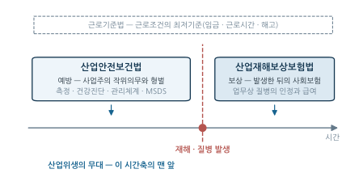
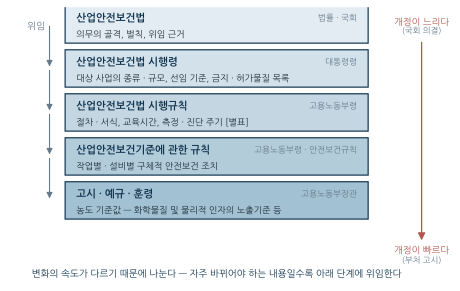
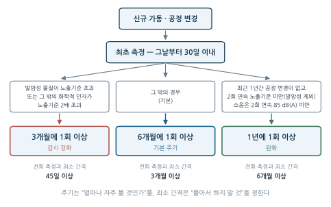
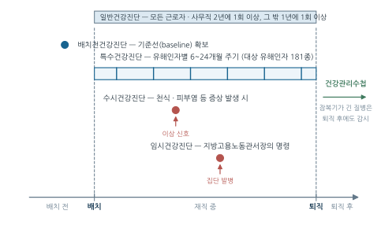

14주차. 산업보건 법규와 관리 제도
산업안전보건법의 체계와 의무 주체, 작업환경측정·특수건강진단 제도, 보건관리자와 안전보건관리체계, MSDS와 화학물질 관리, 정도관리
학습목표
이 주를 학습한 후 여러분은 다음을 할 수 있어야 합니다:
- 산업안전보건법이 왜 필요한지와 법령의 4단 체계(법-시행령-시행규칙-고시), 주요 의무 주체(사업주, 근로자대표, 도급인)를 설명할 수 있다
- 작업환경측정 제도의 대상·주기·절차와 결과에 따른 조치를 실제 사업장 상황에 적용할 수 있다
- 특수건강진단 제도(대상 유해인자, 배치전·수시·임시 진단, 판정 구분)의 작동 원리를 설명할 수 있다
- 안전보건관리체계에서 보건관리자·산업보건의의 위치와 역할을 설명할 수 있다
- MSDS 16항목의 구성과 배열 논리를 설명하고, 산업위생 실무에서 실제로 쓰이는 항목을 짚어 낼 수 있으며, 화학물질 규제의 위계(관리대상물질–특별관리물질–허가물질–금지물질)를 구분할 수 있다
- 정도관리의 구분(정기·특별)과 평가기준·판정기준, 결과에 따른 조치를 설명하고, 그것이 측정 결과의 신뢰성을 어떻게 보장하는지 논할 수 있다
1. 산업안전보건법의 체계 · 작업환경측정 제도
1.1 산업안전보건법의 체계
왜 별도의 법이 필요한가
지금까지 배운 산업위생의 기술적 내용 — 측정(2~3주차), 유해인자(47·1112주차), 관리(9~10·13주차) — 은 그 자체로는 권고에 불과하다. 이를 사업장의 의무로 만드는 것이 법이다. 왜 시장의 자율에 맡기지 않는가? 근로계약은 형식적으로 대등한 계약이지만, 실질적으로 근로자는 작업 방법·설비·물질을 스스로 선택할 수 없다. 위험을 만들어내는 자(사업주)와 위험을 감수하는 자(근로자)가 분리되어 있고, 시장 원리에 맡기면 안전 투자는 비용으로만 인식되어 과소 공급된다.
산업안전보건법은 이 구조적 불균형을 공법적 규제로 교정한다. 사업주에게 구체적인 작위의무를 부과하고 위반 시 형벌로 강제한다는 점에서, 근로조건의 최저기준을 정하는 근로기준법과 성격이 다르다.
| 법률 | 기능 | 성격 |
|---|---|---|
| 근로기준법 | 근로조건의 최저기준(임금·근로시간·해고) | 사법적 효력 + 벌칙 |
| 산업안전보건법 | 재해 예방을 위한 사업주 의무 | 행정규제 + 형벌 |
| 산업재해보상보험법 | 재해 발생 후 보상 | 사회보험 |

예방(산안법) → 발생 → 보상(산재보험법)의 시간축으로 보면 체계가 명확해진다. 산업위생이 담당하는 무대는 이 시간축의 맨 앞, 예방이다. 참고로 2019년의 전부개정(2020년 시행)에서 보호대상이 “근로자”에서 “노무를 제공하는 사람”으로 확장되었다 — 위험이 고용 형태를 가리지 않는다는 현실을 법이 따라간 것이다.
법령의 4단 구조
산업안전보건 법령은 위임의 사슬로 연결된 계층 구조를 이룬다. 이 구조를 이해하면 방대한 법령 속에서 필요한 규정을 찾을 수 있다.

왜 이렇게 나누는가? 변화의 속도가 다르기 때문이다. “측정을 하여야 한다”는 의무의 골격은 수십 년간 유지되지만, 측정 주기나 노출기준 수치는 과학적 지식과 산업 구조에 따라 자주 바뀌어야 한다. 국회 입법이 필요한 법률에 수치를 못 박으면 개정이 느려지므로, 자주 바뀌는 내용일수록 낮은 단계에 위임한다.
| 내용의 성격 | 규정되는 단계 |
|---|---|
| “~하여야 한다”는 의무 자체 | 법률 |
| 대상 사업의 규모·업종 | 시행령 |
| 기간·주기·시간·서식 | 시행규칙(별표) |
| 작업·설비별 물리적 사양 | 안전보건규칙 |
| 농도 기준값(TWA/STEL 등) | 고시 |
3주차에서 다룬 노출기준(TWA, STEL)이 법률이 아니라 고시 (「화학물질 및 물리적 인자의 노출기준」)에 있는 이유가 여기에 있다 — 독성학적 근거가 갱신되면 신속히 개정할 수 있어야 하기 때문이다.
의무 주체 — 누가 무엇을 해야 하는가
법의 의무 구조를 읽으려면 몇 가지 주체 개념을 정확히 잡아야 한다.
| 주체 | 정의 | 이 장에서의 역할 |
|---|---|---|
| 사업주 | 근로자를 사용하여 사업을 하는 자 | 측정·건강진단·관리체계 구축 의무의 기본 주체 |
| 근로자대표 | 근로자 과반수 노동조합, 없으면 근로자 과반수를 대표하는 자 | 측정 참관 요구, 설명회 요구, 위원회 구성의 주체 |
| 도급인 | 물건의 제조·건설·수리 또는 서비스 제공 등의 업무를 도급하는 사업주 | 자기 사업장에서 일하는 수급인 근로자의 작업환경까지 책임 |
주의할 점은, 의무의 주체가 언제나 “그 근로자를 직접 고용한 사업주”는 아니라는 것이다. 도급인의 사업장에서 수급인의 근로자가 작업하는 경우, 작업환경을 실제로 지배·관리하는 것은 도급인이므로 작업환경측정 의무도 도급인이 진다(§1.2). 위험을 통제할 수 있는 자에게 의무를 지운다는 원칙이 법 전체를 관통한다. 적용범위는 원칙적으로 모든 사업 및 사업장이며, 유해·위험의 정도와 사업의 종류·규모에 따라 일부 규정의 적용이 제외될 수 있다.
1.2 작업환경측정 제도
제도의 구조 — 평가를 의무로 만들기
2~3주차에서 배운 노출평가는 기술적으로 아무리 정교해도, 사업주가 하지 않으면 그만이다. 작업환경측정 제도는 AREC의 ’평가’를 법적 의무로 전환한 장치다. 법은 작업환경측정을 “작업환경 실태를 파악하기 위하여 해당 근로자 또는 작업장에 대하여 사업주가 측정계획을 수립한 후 시료를 채취하고 분석·평가하는 것”으로 정의한다. 계획→채취→분석→평가의 4단계가 정의 안에 이미 들어 있다 — 시료 하나 채취해 보는 것은 법적 의미의 측정이 아니다.
사업주는 측정 대상 유해인자에 노출되는 근로자가 있는 작업장에 대하여 측정을 실시하고, 결과를 기록·보존하며 고용노동부장관에게 보고하여야 한다. 대상 유해인자는 시행규칙 별표에서 정하며 화학적 인자·분진·물리적 인자·소음 등 약 190여 종이다.
측정 주기 — 위험에 비례하는 감시 빈도
측정 주기의 설계 원리는 단순하다. 위험이 클수록 자주, 안정적으로 낮으면 드물게 본다.
| 상황 | 주기 |
|---|---|
| 신규 가동·변경으로 최초 측정 | 그날부터 30일 이내 실시, 이후 6개월에 1회 이상 |
| 발암성 물질이 노출기준 초과 | 3개월에 1회 이상 |
| 그 밖의 화학적 인자가 노출기준 2배 초과 | 3개월에 1회 이상 |
| 최근 1년간 공정 변경이 없고, 최근 2회 연속 노출기준 미만(발암성 물질 제외) | 1년에 1회 이상 |
| 소음이 최근 2회 연속 85 dB(A) 미만 | 1년에 1회 이상 |
기본 주기는 6개월이고, 결과가 나쁘면 3개월로 단축되며, 결과가 연속으로 좋고 공정 변화가 없으면 1년으로 완화된다. 다만 발암성 물질은 결과가 좋아도 주기 완화 대상에서 제외된다 — 역치를 가정하기 어려운 발암물질의 특성(4주차)이 반영된 것이다.
그런데 “6개월에 1회 이상”만 보면, 1월과 2월에 두 번 측정하고 나머지 열 달을 비워 두어도 형식상 요건은 채워진다. 「작업환경측정 및 정도관리 등에 관한 고시」는 이를 막기 위해 전회(前回) 측정을 완료한 날부터 두어야 할 최소 간격을 따로 정해 두었다.
| 측정 주기 | 전회 측정 완료일부터의 최소 간격 |
|---|---|
| 반기(6개월)에 1회 이상 | 3개월 이상 |
| 3개월에 1회 이상 | 45일 이상 |
| 연(年) 1회 이상 | 6개월 이상 |
주기가 “얼마나 자주 볼 것인가”를 정한다면, 간격은 “몰아서 하지 말 것”을 정한다. 두 규정이 함께 작동해야 측정 시점이 1년에 걸쳐 흩어진다 — 노출은 연중 계속되는데 측정만 한쪽에 몰리면 감시가 아니라 표본의 편향이 되기 때문이다.

그림 15.3 의 세 갈래를 하나의 문장으로 요약하면 이렇다. 모든 사업장은 6개월 주기에서 출발하고, 결과가 나쁘면 3개월로 당겨지며, 결과가 연속으로 좋고 공정 변화가 없으면 1년으로 늦춰진다. 다만 완화 쪽 갈래에는 발암성 물질이 들어가지 못한다.
노출 수준이 노출기준에 비하여 현저히 낮은 작업장은 측정 대상에서 제외될 수 있는데, 고시가 실제로 지정한 것은 「석유 및 석유대체연료 사업법 시행령」에 따른 주유소 하나다. 다만 다음 중 하나에 해당하면 1개월 이내에 측정을 실시하여야 한다.
- 건강진단 결과 직업병 유소견자 또는 직업성 질병자가 발생한 경우
- 근로자대표가 요구하는 경우로서 산업위생전문가가 필요하다고 판단한 경우
- 그 밖에 지방고용노동관서장이 필요하다고 인정하여 명령한 경우
면제는 “노출이 충분히 낮다”는 추정 위에 서 있다. 그 추정을 뒤집는 사실(유소견자 발생)이 나타나면 면제가 즉시 풀리는 구조다.
반대 방향의 예외도 있다. 임시작업·단시간작업은 원칙적으로 측정 대상에서 빠지지만, 허가대상유해물질과 특별관리물질은 임시·단시간 작업이라도 제외되지 않는다. 물질 규제의 사다리(§3.1)에서 위쪽에 있는 물질은 작업 시간이 짧다는 이유로 감시를 면제받지 못한다.
측정 방법과 절차 — 근로자의 참여
측정의 기술적 방법(시료채취, 분석)은 2~3주차에서 다루었다 (2주차, 3주차). 법은 그 방법 중 핵심 원칙을 의무화하고, 절차에 근로자의 참여를 심어 놓았다.
- 측정 전: 예비조사를 실시하고 측정계획서를 작성한다. 계획서에는 원재료 투입부터 최종 제품생산까지의 주요공정 도식, 공정별 작업내용과 화학물질 사용실태, 측정대상 공정·유해인자와 그 발생주기, 종사근로자 현황, 유해인자별 측정방법과 소요기간이 들어간다(전회 측정 사업장으로서 공정·취급인자 변동이 없으면 서류상 예비조사로 갈음할 수 있다)
- 측정: 작업이 정상적으로 이루어져 유해인자 발생시간이 완전히 포함되는 시간 동안 실시
- 시료채취 방식: 개인 시료채취 방법을 원칙으로 하며, 곤란한 경우에만 지역 시료채취
- 참관: 근로자대표 또는 해당 작업 근로자가 요구하면 측정 시 참관하게 하여야 한다
- 보고: 시료채취를 마친 날부터 30일 이내 관할 지방고용노동관서장에게 제출. 부득이한 경우에는 측정일·지연사유 등을 적은 지연사유서를 제출하여 30일의 범위에서 제출기간을 연장할 수 있다
- 알림: 결과를 게시판 부착·사보 게재·집합교육 등 근로자가 알 수 있는 방법(전자적 방법 포함)으로 해당 사업장 근로자에게 알린다
- 설명회: 산업안전보건위원회 또는 근로자대표가 설명회 개최를 요구하면, 측정기관으로부터 결과를 통보받은 날부터 10일 이내에 설명회를 실시하여야 한다
측정 시간과 시료채취 인원은 고시가 구체적으로 못 박아 둔 부분이다. 시간가중평균기준(TWA)이 설정된 물질은 1일 작업시간 동안 6시간 이상 연속 측정하거나 작업시간을 등간격으로 나누어 6시간 이상 연속분리하여 측정한다. 다만 대상물질의 발생시간이 6시간 이하이거나, 불규칙작업으로 6시간 이하의 작업을 하거나, 발생원에서의 발생이 간헐적인 경우에는 발생시간 동안 측정할 수 있다. 단시간 노출평가가 필요하다고 판단되면 1회에 15분간 측정을 추가한다. 시료채취 근로자 수(최고노출근로자 2명 이상, 10명 초과 시 매 5명당 1명 추가 등)의 산정 규칙은 2주차 §1.2에서 이미 다루었다.
측정은 사업주가 비용을 지불하고 실시한다. 그렇다면 “한산한 날 골라서 측정”하거나 결과를 알리지 않을 유인이 생긴다. 참관권은 측정이 대표성 있는 조건에서 이루어지는지 근로자가 확인할 수 있게 하고, 설명회는 결과가 노출된 당사자에게 돌아가게 한다. 대표성 있는 시료채취(2주차)가 여기서 법적 요건이 되는 것이다.
측정 결과 노출기준을 초과한 작업공정이 있으면, 사업주는 시설·설비의 설치·개선 또는 건강진단 실시 등의 조치를 하고, 시료채취를 마친 날부터 60일 이내에 개선을 증명하는 서류 또는 개선계획을 제출하여야 한다. 측정이 측정으로 끝나지 않고 관리(Control)로 연결되도록 시한을 박아 둔 것이다.
누가 측정하는가
도급인의 사업장에서 관계수급인의 근로자가 작업을 하는 경우, 측정 의무는 수급인이 아니라 도급인에게 있다. 도급인은 소속된 사람 중 산업위생관리산업기사 이상의 자격을 가진 사람으로 하여금 측정하게 하여야 한다 — 작업환경을 지배·관리하는 자가 의무를 진다는 §1.1의 원칙이 여기서 관철된다. 사업주가 직접 측정할 수 없는 경우에는 작업환경측정기관에 위탁한다.
측정 결과가 노출기준 미만인데도 직업병 유소견자가 발생했다면? 이때 한국산업안전보건공단은 작업환경측정 신뢰성평가를 할 수 있다. 측정값과 건강영향이 어긋날 때 건강진단이 아니라 측정 자체를 되짚는 장치다. 측정이 늘 옳다고 전제하지 않는다는 점에서, 제도 스스로에 대한 검증 장치라 할 수 있다.
정도관리제도 — 측정의 측정
1주차에서 예고했던 제도다. 작업환경측정 결과는 노출기준 초과 여부 판정, 개선 명령, 직업병 인정까지 좌우한다. 그런데 측정기관마다 분석 결과가 다르다면 이 모든 판단의 기초가 무너진다.
고시는 정도관리를 “작업환경측정·분석 결과에 대한 정확성과 정밀도를 확보하기 위하여 작업환경측정기관의 측정·분석능력을 확인하고, 그 결과에 따라 지도·교육 등 측정·분석능력 향상을 위하여 행하는 모든 관리적 수단”으로 정의한다. 두 가지를 짚어 둘 만하다. 첫째, 목표가 정확도와 정밀도 두 축이라는 것 — 정확도는 분석치가 참값에 얼마나 접근했는가이고, 정밀도는 반복 분석했을 때 변동이 얼마나 작은가다(3주차). 둘째, 정의에 “지도·교육”이 들어 있다는 것 — 정도관리는 걸러내는 제도이기 전에 끌어올리는 제도로 설계되어 있다.
| ① 현장 시료 채취 | ② 기관의 분석 | ③ 노출기준과 비교 | ④ 법적 조치 |
|---|---|---|---|
| 정도관리가 이 고리를 받친다 — 흔들리면 사슬 전체가 무너진다 |
누가 하는가. 정도관리는 고용노동부장관이 직접 하지 않고 한국산업안전보건 공단 산업안전보건연구원이 실시한다. 연구원은 연간세부계획을 세워 정도관리를 실시하고 결과 평가와 사후관리까지 맡으며, 국제적으로 공신력이 있는 정도관리기구에 가입하여야 한다. 국내 기관들끼리만 서로를 평가하면 집단 전체가 함께 치우칠 수 있으므로, 바깥의 잣대에 스스로를 연결해 두라는 요구다. 연구원의 업무에는 관리기준 설정, 분석방법의 표준화, 정도관리용 시료의 조제·분배와 분석, 분석능력 평가, 기관 간 자료 수집과 결과 통보, 그리고 대상기관에 대한 교육이 포함된다.
누가 받는가. 대상은 작업환경측정기관, 유해인자별·업종별 작업환경전문연구기관, 그리고 분석수탁기관이다. 측정을 하는 기관만이 아니라 시료를 넘겨받아 분석만 하는 기관까지 포함된다는 점이 중요하다 — 분석은 위탁될 수 있으므로, 위탁받는 쪽이 검증되지 않으면 사슬에 구멍이 남는다. 참여를 희망하는 다른 기관·단체·사업장도 참여할 수 있다.
무엇을, 얼마나 자주. 정도관리는 정기정도관리와 특별정도관리로 나뉜다.
| 구분 | 실시 시기 | 평가 항목 |
|---|---|---|
| 정기정도관리 | 연 1회 이상 · 기본분야(기본적인 유기화합물과 금속류의 분석능력)와 자율분야(특수한 유해인자의 분석능력)로 구분 | 분석자의 분석능력 |
| 특별정도관리 | ① 작업환경측정기관으로 지정받고자 하는 경우 ② 직전 정기정도관리(기본분야)에 불합격한 경우 ③ 부실측정 관련 민원을 야기하는 등 운영위원회가 필요하다고 인정하는 경우 | 분석장비·설비, 분석준비현황, 분석자의 분석능력 등 |
정기정도관리가 매년 돌아오는 정기 검진이라면, 특별정도관리는 진입 시점(지정)과 이상 신호(불합격·민원) 때 실시하는 정밀 검사다. 측정 대상 작업장에 일부 분야의 유해인자만 있는 사업장 자체측정기관은 해당 항목에 한정하여 참여할 수 있다.
어떻게 평가하는가. 방식은 미지 농도의 표준시료를 배부하고 그 분석값을 받아 보는 것이다. 대상기관은 정도관리용 시료를 배부받은 날부터 20일 이내에 분석결과와 분석 관련 자료를 실시기관에 통보하여야 하며, 실시기관은 필요하다고 인정되면 기관을 방문하여 자료의 적정성과 분석자의 자격·능력을 조사할 수 있다. 평가 기준은 다음과 같다.
| 구분 | 적합 기준 |
|---|---|
| 정기정도관리 | 시료분석 결과값이 분야별로 100분의 75 이상 적합범위에 포함되면 분야별 적합 |
| 특별정도관리 | 각 항목 배점을 합산해 100점 만점으로 환산한 점수가 75점 이상이면 적합 |
| 공통 | 위 기준에도 불구하고 분석 관련 자료를 제출하지 않거나 자료가 적합하지 아니하면 해당 분야는 부적합 |
마지막 줄이 제도의 성격을 잘 보여 준다. 숫자가 맞아도 어떻게 그 숫자에 이르렀는지 보여 주지 못하면 부적합이다. 결과값만 맞히는 것이 아니라 분석 과정이 재현 가능해야 한다는 요구이며, 이는 정도관리가 “정답 맞히기”가 아니라 분석 능력의 검증이라는 뜻이다.
적합/부적합에서 합격/불합격으로. 개별 회차의 평가(적합·부적합)와 최종 판정(합격·불합격)은 층이 다르다. 고용노동부장관은 실시기관의 결과보고를 검토하여 다음 기준으로 종합 판정한다.
- 정기정도관리(기본분야) 결과 동일한 분야에서 어느 한 분야라도 2회 연속 부적합 평가를 받으면 불합격
- 특별정도관리에서 1회 부적합이면 불합격(특별정도관리 대상 기관이 해당 정도관리를 받지 않은 경우에도 불합격)
- 정기정도관리(기본분야)에 참여하지 않으면 부적합으로 처리하여 위 규정에 준하여 판정
정기는 두 번, 특별은 한 번이다. 정기정도관리는 매년 반복되므로 한 회의 실패가 우연일 수 있지만, 특별정도관리는 이미 문제 신호가 있어서 실시하는 검사이므로 한 번의 부적합으로 판정한다. 미수검을 부적합과 같이 취급하는 것도 같은 논리다 — 받지 않으면 통과라는 우회로를 막지 않으면 제도가 무의미해진다.
결과에 따른 조치. 부적합·불합격은 서류상의 낙인으로 끝나지 않고 실제 업무 범위를 바꾼다.
- 재수검 의무: 정기·특별정도관리에서 부적합 평가를 받았거나 분석자가 변경된 대상기관은 이후 최초로 도래하는 해당 정도관리를 다시 받아야 한다. 능력의 주체가 기관이 아니라 사람(분석자)임을 인정한 조항이다 — 사람이 바뀌면 검증도 다시 한다.
- 분석 위탁 자격의 제한: 측정기관이 시료 분석을 다른 기관에 위탁할 때에는 가장 최근에 시행된 정기정도관리에서 적합판정을 받은 기관에만 의뢰할 수 있다. 유기화합물을 위탁하려면 기본분야 유기화합물 항목 적합, 금속류는 기본분야 금속류 항목 적합, 특수 장비를 쓰는 경우에는 자율분야의 해당 항목 적합이어야 한다. 정도관리 성적이 곧 수주 자격이 되는 구조다.
- 정기점검의 강약 조절: 지방고용노동관서의 장은 측정기관의 인력·시설·장비 요건과 업무실태를 매년 1월 중 정기점검하되, 평가등급이 우수한 기관은 정기점검을 면제할 수 있다. 반대로 부실측정 민원이 발생하거나 작업환경측정 신뢰성평가에서 중대한 문제가 확인되면 수시점검을 실시할 수 있다.
- 결과의 통보와 공개: 연구원장은 적합으로 평가된 기관에 정도관리 결과서를 발급하고, 정도관리 결과를 공단 홈페이지에 공고할 수 있다. 실시기관은 정도관리를 종료한 날부터 10일 이내에 결과를 고용노동부장관에게 보고한다.
절차의 공정성. 평가가 제재로 이어지므로 고시는 절차적 방어권도 함께 둔다. 실시기관은 정도관리 시행 30일 전까지 실시계획을 공고하고(특별정도관리 제외), 결과에 이의가 있는 기관은 통보받은 날부터 7일 이내 이의신청서를 제출할 수 있으며, 연구원장은 접수일부터 14일 이내 운영위원회 또는 실무위원회를 열거나 서면으로 심의하여, 개최일(서면심의일)부터 7일 이내 처리결과를 통보하여야 한다. 심의 기준을 정하는 곳도 별도로 있다 — 표준시료의 농도 결정과 조제방법, 평가방법과 결과처리를 심의·조정하는 정도관리운영위원회(위원장은 연구원장, 위원장 포함 10명 이내, 연 1회 이상 정기회의)와, 세부일정·기준시료 조제·분석시료 평가를 실무로 수행하는 정도관리실무위원회(3명 이상 5명 이하)다. 위원은 연구원과 한국산업보건학회가 추천하는 전문가로 구성된다 — 규제기관 단독이 아니라 학회가 참여하는 구조다.
정도관리는 우리나라 측정기관의 분석능력을 끌어올린 결정적 제도로 평가된다(1주차 §2.2). 측정 인프라가 신뢰를 얻어야 그 위에 세워진 모든 제도 — 개선 명령, 건강진단 연계, 직업병 판정 — 가 작동한다. 반대로 말하면, 2주차에서 배운 시료채취 이론도 3주차에서 배운 판정 원리도, 그것을 수행하는 기관이 검증되지 않으면 종이 위의 지식으로 남는다.
2. 특수건강진단 제도 · 안전보건관리체계와 보건관리자
2.1 특수건강진단 제도
건강진단의 다섯 종류
작업환경측정이 환경을 감시한다면, 건강진단은 사람을 감시한다. 둘은 같은 노출을 서로 다른 창으로 들여다보는 상호보완 관계다 (생물학적 모니터링과의 관계는 11주차 참조).
| 종류 | 대상 | 주기·시기 | 목적 |
|---|---|---|---|
| 일반건강진단 | 모든 근로자 | 사무직 2년에 1회 이상, 그 밖 1년에 1회 이상 | 건강관리 일반 |
| 특수건강진단 | 특수건강진단 대상 유해인자(181종) 노출 근로자, 직업병 유소견자로 판정받은 후 작업 전환한 근로자 | 유해인자별 6~24개월 | 직업병 조기 발견 |
| 배치전건강진단 | 특수건강진단 대상 업무에 배치되는 근로자 | 배치 전 | 기초자료 확보, 적합성 평가 |
| 수시건강진단 | 특수건강진단 대상 업무로 인한 천식·피부염 등 증상을 보이는 근로자 | 사유 발생 시 | 급성 건강장해 대응 |
| 임시건강진단 | 지방고용노동관서장의 명령 | 명령 시 | 집단 발병 등 규명 |
다섯 종류는 시간축 위의 서로 다른 지점을 담당한다.

- 배치전건강진단이 없으면, 나중에 발견된 이상이 노출 때문인지 원래 있던 것인지 구분할 수 없다 — 기저치(baseline) 확보의 논리다.
- 수시건강진단은 정기 주기를 기다리지 않는다. 천식·피부염처럼 빠르게 진행하는 건강장해는 다음 정기 진단까지 방치할 수 없기 때문이다.
- 임시건강진단은 사업주의 판단이 아니라 행정관청의 명령으로 실시된다. 집단 발병처럼 사업장 자율에 맡길 수 없는 상황을 위한 장치다.
주기의 논리
특수건강진단 주기는 일률적이지 않고 유해인자의 독성과 잠복기에 따라 6~24개월로 차등화되어 있다.
- 6개월: 벤젠, 사염화탄소, 1,1,2,2-테트라클로로에탄 등 급성·강한 독성
- 12개월: 대부분의 유기용제, 금속, 산·알칼리
- 24개월: 소음, 진동, 분진, 고기압 등 만성 물리적 인자 일부
또한 배치 후 첫 번째 특수건강진단 시기가 유해인자별로 별도로 정해져 있다(예: 벤젠 2개월 이내, 소음 12개월 이내). 건강장해가 빠르게 나타날 수 있는 물질은 배치 직후에 확인하고, 수년에 걸쳐 진행되는 소음성 난청은 첫 진단을 늦게 잡는다 — 유해인자별 건강영향의 시간 특성(4~7주차)이 그대로 주기 설계에 반영된 것이다.
판정 — 건강관리구분
진단 결과는 표준화된 구분으로 판정된다. 기호의 구조를 알면 외울 필요가 없다: C는 요관찰, D는 유소견, 아래첨자 1은 직업성, 2는 일반질병이다.
| 구분 | 의미 |
|---|---|
| A | 건강관리상 사후관리가 필요 없는 근로자(정상) |
| C₁ | 직업성 질병으로 진전될 우려 — 추적관찰 필요(직업병 요관찰자) |
| C₂ | 일반질병으로 진전될 우려 — 추적관찰 필요(일반질병 요관찰자) |
| Cₙ | 야간작업 시 추적관찰이 필요한 근로자 |
| D₁ | 직업성 질병의 소견 — 사후관리 필요(직업병 유소견자) |
| D₂ | 일반질병의 소견 — 사후관리 필요(일반질병 유소견자) |
| Dₙ | 야간작업으로 인한 질병의 소견을 보이는 근로자 |
| R | 1차 검사 결과 판정 보류 — 2차 건강진단 필요 |
판정은 끝이 아니라 시작이다. 사후관리 조치로 건강상담, 보호구 지급·착용 지도(13주차), 추적검사, 근무 중 치료, 근로시간 단축, 작업전환, 근로금지 및 제한 등이 이어지며, 사업주는 결과를 받은 날부터 30일 이내에 조치 결과를 제출하여야 한다.
사업주는 건강진단 결과를 근로자의 건강 보호·유지 외의 목적으로 사용해서는 안 된다. 해고·전보 등 인사상 불이익의 근거로 삼는 것은 명백한 위법이다.
이 조항이 없다면 어떻게 될까. 진단에서 이상이 나오면 불이익을 받는다는 것을 아는 근로자는 증상을 숨기고 진단을 회피할 것이고, 조기 발견이라는 제도의 목적 자체가 무너진다. 정보가 보호 목적으로만 쓰인다는 신뢰가 2차 예방 제도의 작동 조건이다.
건강관리수첩 — 퇴직 이후의 감시
특수건강진단은 재직 중에만 이루어진다. 그런데 석면에 의한 중피종은 노출 후 20~40년이 지나 발병한다(1주차). 퇴직과 함께 감시가 끊기면 잠복기가 긴 직업병은 제도의 사각지대에 놓인다. 건강관리수첩은 직업성 암 등 잠복기가 긴 질병의 발생 위험이 있는 업무에 일정 기간 이상 종사한 사람에게 발급되어, 퇴직 후에도 건강진단을 받을 수 있게 하는 제도다.
| 업무 | 종사 기간 요건 |
|---|---|
| 니켈 또는 그 화합물을 광석으로부터 추출·제조·취급하는 업무 | 5년 이상 |
| 염화비닐을 제조·사용하는 석유화학설비를 유지·보수하는 업무 | 4년 이상 |
| 비스-(클로로메틸)에테르를 제조·취급하는 업무 | 3년 이상 |
| 석면 또는 석면방직제품을 제조하는 업무 | 3개월 이상 |
석면만 개월 단위(3개월)라는 점이 눈에 띈다. 석면은 소량·단기 노출로도 중피종이 발생할 수 있어 기간 요건이 극단적으로 짧다 — 발급 요건의 길이가 곧 물질의 위험 특성을 반영한다.
2.2 안전보건관리체계와 보건관리자
체계의 설계 원리 — 라인과 스태프
법은 사업장의 안전보건 업무를 ① 총괄하는 자, ② 실행을 지휘하는 자, ③ 전문적으로 보좌하는 자로 나누어 설계한다.
| 자리 | 누구 | 하는 일 |
|---|---|---|
| 안전보건관리책임자 | 사업장을 실질적으로 총괄관리하는 사람(통상 공장장) | 총괄·지휘 |
| 관리감독자 (라인) | 생산부서의 장이 겸함 | 현장의 안전보건 점검·지도 |
| 보좌·조언 (스태프) | 보건관리자 · 산업보건의 · 안전관리자 | 전문적 지도·조언 |
| 산업안전보건위원회 | 노사 동수 | 심의·의결 |
- 안전보건관리책임자·관리감독자는 라인(line)이다. 지시·명령 권한을 가지고 실제로 작업을 통제한다. 관리감독자는 별도로 선임하는 것이 아니라 기존 직책(반장·조장·팀장)이 당연히 겸한다.
- 보건관리자·안전관리자는 스태프(staff)다. 원칙적으로 지도·조언·보좌를 하며, 직접 작업을 지휘하지 않는다.
왜 이렇게 나누는가? 전문성과 집행력이 다른 사람에게 있기 때문이다. 보건관리자는 유해인자를 알지만 라인을 멈출 권한이 없고, 관리감독자는 라인을 통제하지만 벤젠의 독성을 모른다. 그래서 스태프가 진단하고, 라인이 집행한다. 스태프에게 실권이 없다는 한계를 보완하기 위해, 법은 관리자가 사업주 또는 안전보건관리책임자에게 직접 보고할 수 있게 하고 증원·교체 명령 제도(§2.2)를 두었다.
보건 전문 인력
| 구분 | 선임 대상(요약) | 주요 직무 |
|---|---|---|
| 보건관리자 | 상시근로자 50명 이상 사업, 건설업 공사금액 800억 원 이상 | 작업환경측정 결과 검토, 건강진단 사후관리, 응급처치, 의료행위(의사·간호사인 경우) |
| 산업보건의 | 보건관리자를 두어야 하는 사업 중 상시근로자 50명 이상(의사인 보건관리자를 둔 경우 등은 제외) | 건강진단 결과 검토, 건강 상담, 작업 적합성 판정 |
| 안전보건관리담당자 | 상시근로자 20명 이상 50명 미만(제조업, 임업, 하수·폐수 및 분뇨 처리업, 폐기물 처리업, 환경 정화 및 복원업) | 안전·보건 업무 겸임 수행 |
이 표의 구조를 읽어 보자. 보건관리자와 산업보건의는 역할이 다르다. 보건관리자는 사업장에 상주하며 측정 결과 검토와 사후관리를 일상적으로 수행하는 실무자이고, 산업보건의는 건강진단 결과의 의학적 판단(작업 적합성 판정 등)을 담당한다. 의사인 보건관리자를 두면 산업보건의를 별도로 두지 않을 수 있는 이유가 여기 있다 — 두 역할이 한 사람 안에서 합쳐지기 때문이다. 한편 안전보건관리담당자는 전문 인력을 별도로 두기 어려운 소규모(20~50명) 사업장을 위한 축소형 제도다.
§1.2~3의 제도들과 연결하면: 작업환경측정 결과를 검토하고 건강진단 사후관리를 챙기는 사람이 보건관리자다. 측정·진단 제도가 서류로 끝나지 않으려면 사업장 안에 그것을 읽고 움직이는 사람이 있어야 하며, 그 자리를 법으로 만들어 둔 것이 이 제도다.
증원·교체 명령 — 체계가 작동하지 않을 때
다음의 경우 고용노동부장관은 관리자의 증원 또는 교체 임명을 명할 수 있다.
- 해당 사업장의 연간 재해율이 같은 업종 평균 재해율의 2배 이상인 경우
- 중대재해가 연간 2건 이상 발생한 경우
- 관리자가 질병이나 그 밖의 사유로 3개월 이상 직무를 수행할 수 없게 된 경우
- 화학적 인자로 인한 직업성 질병자가 연간 3명 이상 발생한 경우
주목할 것은 마지막 항목이다. 화학물질 직업병의 반복 발생은 보건관리 기능이 작동하지 않는다는 신호이며, 국가는 이때 사람(관리자)의 교체·증원에 개입한다. 결과 지표가 나쁘면 체계에 개입한다는 환류 구조다.
산업안전보건위원회 — 노사가 함께 결정한다
노사가 동수로 참여하여 안전보건 사항을 심의·의결하는 기구다. 자문기구가 아니라 의결기구라는 점이 핵심이다. 정기회의는 분기마다 개최하고, 회의록은 2년 보존한다.
보건과 직접 관련되는 심의·의결 사항으로 작업환경측정 등 작업환경의 점검 및 개선, 근로자의 건강진단 등 건강관리가 포함된다. 즉 §1.2~3의 제도들은 사업주가 일방적으로 운영하는 것이 아니라 노사 공동 의사결정의 대상이다 — 측정 참관권·설명회(§1.2)와 같은 맥락에서, 위험 정보에 대한 근로자의 접근과 참여를 제도화한 것이다.
3. 화학물질 관리와 MSDS · 사무실 공기관리 지침
3.1 화학물질 관리와 MSDS
알 권리의 제도화 — MSDS
화학물질 관리의 출발점은 “무엇을 다루고 있는지 아는 것”이다. 1주차의 예측(Anticipation)에서 MSDS 검토가 첫 단계였던 것을 기억하자. MSDS 제도는 이 앎을 공급망을 따라 흐르게 만드는 법적 장치다. 물질안전보건자료대상물질을 제조하거나 수입하려는 자는 MSDS를 작성하여 고용노동부장관에게 제출하여야 한다(2021년 시행). 종전의 “양도·제공 시 첨부” 의무에 더해, 국가가 화학물질 정보를 집적하도록 한 변화다.
작성 대상은 물리적 위험성·건강 유해성·환경 유해성으로 분류되는 물질과 그런 물질을 일정 농도 이상 함유한 혼합물이다. 다만 다른 법률이 이미 별도의 안전 정보 체계를 갖춘 것들 — 의약품, 농약, 화장품, 식품, 방사성물질, 폐기물, 화약류 등 — 은 제외된다. 화학물질이라고 모두 MSDS를 쓰는 것이 아니라, 작업장에서 근로자가 취급하는 화학물질을 대상으로 하는 제도다.
MSDS 16항목 — 무엇이, 왜 그 순서로 있는가
MSDS의 형식은 국제조화시스템(GHS)을 따라 16개 항목으로 고정되어 있다. 항목 수와 순서가 세계적으로 같기 때문에, 수입 물질의 자료를 받아도 “8번을 펴면 보호구 이야기가 있다”는 것을 알 수 있다. 순서 자체가 정보 검색의 약속인 셈이다.
배열의 논리는 급할수록 앞에다. 사고 현장에서 앞에서부터 읽어 내려가도 필요한 순서로 정보가 나오도록 짜여 있다.
| 묶음 | 항목 | 무엇이 들어가는가 |
|---|---|---|
| 정체 확인 (1~3) |
1. 화학제품과 회사에 관한 정보 | 제품명(경고표지와 동일해야 함), 권고 용도와 사용상의 제한, 공급자 정보와 긴급전화번호 |
| 2. 유해성·위험성 | 유해·위험성 분류 결과, 경고표지 항목(그림문자·신호어·유해위험문구·예방조치문구), 분류기준에 포함되지 않는 기타 위험성(분진폭발·질식·동결 등) | |
| 3. 구성성분의 명칭 및 함유량 | 화학물질명(함유량 내림차순 기재 권장), 관용명·이명, CAS번호, 함유량(%) | |
| 사고 대응 (4~6) |
4. 응급조치 요령 | 눈·피부·흡입·섭취별 초기대응, 기타 의사의 주의사항(해독제·금기사항 등) |
| 5. 폭발·화재 시 대처방법 | 적절한·부적절한 소화제, 연소 시 생성되는 유해물질, 화재 진압 시 보호구 | |
| 6. 누출 사고 시 대처방법 | 인체 보호 조치와 보호구, 환경 보호 조치, 정화·제거 방법 | |
| 일상 취급 (7~8) |
7. 취급 및 저장방법 | 안전취급요령(작업구역 내 음식·흡연 금지 등), 안전한 저장 방법(발화원·외부환경조건·환기 요구사항) |
| 8. 노출방지 및 개인보호구 | 노출기준·생물학적 노출기준, 적절한 공학적 관리(국소배기장치·밀폐설비 등), 호흡기·눈·손·신체 보호구의 구체적 종류 | |
| 과학적 근거 (9~12) |
9. 물리화학적 특성 | 외관·냄새·pH·녹는점·끓는점·인화점·증기압·용해도·증기밀도·비중·n-옥탄올/물 분배계수·자연발화온도·분해온도·점도·분자량 등 |
| 10. 안정성 및 반응성 | 화학적 안정성, 피해야 할 조건·물질, 분해 시 생성되는 유해물질 | |
| 11. 독성에 관한 정보 | 노출 경로, 급성독성 값, 피부·눈 자극성, 호흡기·피부 과민성, 생식세포 변이원성, 발암성(IARC·ACGIH 등의 분류등급), 생식독성, 특정표적장기독성(1회/반복), 흡인 유해성 | |
| 12. 환경에 미치는 영향 | 수생·육생 생태독성, 잔류성과 분해성, 생물 농축성, 토양 이동성 | |
| 처분·유통 (13~14) |
13. 폐기 시 주의사항 | 폐기방법, 용기의 폐기·재사용·매립, 폐기 종사자의 안전 |
| 14. 운송에 필요한 정보 | UN번호, 적정 선적명, 운송 위험성 등급, 용기등급, 해양오염물질 여부 | |
| 규제·이력 (15~16) |
15. 법적 규제현황 | 산업안전보건법(금지·허가대상·관리대상·특별관리물질, 작업환경측정 대상, 특수건강진단 대상, 허용기준 이하 유지대상, 노출기준 설정물질 등), 화학물질관리법, 위험물안전관리법, 폐기물관리법 |
| 16. 그 밖의 참고사항 | 자료의 출처, 최초 작성일자, 개정횟수 및 최종 개정일자 |
읽는 순서를 뒤집어 보면 설계 의도가 더 잘 보인다. 1~3항은 “이것이 무엇인가”, 4~6항은 “지금 사고가 났을 때 무엇을 할 것인가”, 7~8항은 “평소에 어떻게 다룰 것인가”, 9~12항은 “그 판단의 과학적 근거는 무엇인가”, 13~14항은 “쓰고 난 뒤와 옮길 때”, 15~16항은 “법적으로 어떤 물질이고 이 문서는 언제 것인가”다. 응급 상황에서 필요한 정보가 뒤쪽 부록이 아니라 앞쪽에 있고, 시간을 두고 읽어야 하는 독성자료가 뒤에 있다.
산업위생 실무가 실제로 펼치는 항목
16항목을 모두 같은 빈도로 쓰지는 않는다. 산업위생 업무에서 반복해서 들여다보는 것은 다음 다섯이다.
| 항목 | 산업위생에서의 쓰임 | 연결되는 주차 |
|---|---|---|
| 3. 구성성분의 명칭 및 함유량 | 무엇에 노출되는지를 확정한다. CAS번호가 있어야 노출기준·측정방법·독성자료를 찾아갈 수 있다 | 2~3주차(측정 대상 확정) |
| 2. 유해성·위험성 | 발암성·생식독성 등 분류 결과로 관리의 강도를 먼저 정한다 | 4주차(독성학) |
| 11. 독성에 관한 정보 | 표적장기와 노출경로를 알아야 무엇을 감시할지(건강진단 항목·생물학적 지표)를 정할 수 있다 | 4주차, 11주차 |
| 9. 물리화학적 특성 | 증기압은 공기 중으로 얼마나 나올지를, 인화점은 화재 위험을, 증기밀도는 증기가 바닥에 깔릴지를 알려 준다. 환기 설계와 측정 전략의 입력값이다 | 9~10주차(환기) |
| 8. 노출방지 및 개인보호구 | 노출기준(비교 기준), 공학적 관리 방법, 보호구의 구체적 종류 — 관리 위계 전체가 한 항목 안에 요약되어 있다 | 9~10주차, 13주차 |
여기서 1주차의 예측(Anticipation) 단계와 이 장이 만난다. 1주차에서 새로운 세척제를 도입하기 전에 MSDS를 검토한다고 했을 때, 실제로 펼치는 곳이 바로 이 다섯 항목이다. 3항에서 주성분과 CAS번호를 확인하고, 2항의 분류에서 생식독성 여부를 보고, 11항에서 표적장기를 확인한 뒤, 9항의 증기압으로 공기 중 확산 정도를 가늠하고, 8항의 노출기준과 권고 공학적 관리로 대책의 윤곽을 잡는다. 물질이 현장에 들어오기 전에 종이 위에서 노출평가와 관리계획의 초안을 짜는 것 — 이것이 MSDS 제도가 예측 단계에서 하는 일이다.
KOSHA GUIDE는 MSDS 작성에 몇 가지 원칙을 두는데, 실무자가 자료의 품질을 판단할 때 그대로 점검표가 된다.
- 정해진 기재사항은 모두 포함되어야 하며, 어떠한 공란도 있어서는 안 된다. 정보가 없으면 없다는 사실을 명확히 적는다(“자료없음”, “해당없음”).
- 정보를 얻을 수 없는 경우와 시험 결과가 음성인 경우는 구분해서 적어야 한다. “자료 없음”과 “유해하지 않음”은 전혀 다른 진술이기 때문이다.
- “위험할 수도 있음”, “건강에 영향 없음”, “거의 모든 조건에서 안전함”, “무해함” 같은 표현은 권장되지 않는다. 은어·두문자어·약어도 피한다.
- MSDS는 근로자·사업주·보건안전 전문가·응급조치 요원·정부기관뿐 아니라 지역사회 구성원에게도 제공될 수 있음을 고려해야 하며, 전문가가 아니어도 유해·위험성을 확인할 수 있도록 작성한다.
- 수와 양은 국제단위(SI)로 표시한다.
공란 하나가 남으면 읽는 사람은 그것이 “위험이 없다”는 뜻인지 “확인하지 않았다”는 뜻인지 알 수 없다. 정보의 부재를 명시하게 하는 것은, 알 권리 제도에서 모르는 것을 모른다고 말하게 만드는 장치다.
혼합물의 경우 모든 성분을 다 적는 것은 아니다. 물리적 위험성 물질은 함유량 1% 미만, 건강·환경 유해성 물질은 분류별로 정해진 한계농도 미만이면 관련 정보를 적지 않을 수 있다. 그 한계농도가 유해성의 성격에 따라 다르다는 점이 중요하다.
| 한계농도 | 해당 유해성 분류 |
|---|---|
| 1% | 급성 독성, 피부 부식성/자극성, 심한 눈 손상성/자극성, 생식세포 변이원성(구분 2), 특정표적장기독성(1회 노출), 특정표적장기독성(반복 노출), 흡인 유해성, 수생환경 유해성 |
| 0.1% | 호흡기 과민성, 피부 과민성, 생식세포 변이원성(구분 1A·1B), 발암성, 생식독성, 오존층 유해성 |
발암성·생식독성·변이원성과 과민성 물질의 한계농도가 10배 더 엄격하다. 역치를 가정하기 어려운 유해성(4주차)과, 극미량으로도 감작이 성립하는 과민성 물질은 “미량이니 적지 않아도 된다”는 논리가 통하지 않기 때문이다. 이 물질들이 바로 §3.1의 규제 사다리에서 특별관리물질로 올라가는 물질들이기도 하다. 한계농도 이하라도 혼합물의 분류에 영향을 주는 성분이면 기재한다.
알 권리와 영업비밀
성분을 공개하면 영업비밀이 새고, 공개하지 않으면 근로자가 무엇에 노출되는지 모른다. 법의 절충은 이렇다: 영업비밀과 관련된 화학물질의 명칭 및 함유량은 고용노동부장관의 승인을 받아 대체자료로 적을 수 있다(유효기간 5년).
그러나 다음 물질은 비공개 승인 대상에서 제외된다.
- 제조 등 금지물질, 허가대상물질
- 특별관리물질(발암성·생식독성·생식세포 변이원성 물질)
- 작업환경측정 대상 유해인자, 특수건강진단 대상 유해인자
원리는 명확하다. 위험이 클수록 알 권리가 영업비밀에 우선한다. 측정·진단 제도의 대상이 되는 물질이라면, 그 이름을 모르고서는 제도 자체가 작동할 수 없기 때문이기도 하다.
승인을 받았더라도 정보가 통째로 사라지지는 않는다. 대체자료 기재 승인을 받은 경우 MSDS 제3항에는 물질명 대신 승인번호와 유효기간을 적어야 한다 — 이름은 가리되 “가려져 있다는 사실”과 “언제까지 유효한지”는 드러나게 하는 방식이다.
MSDS의 정보는 경고표지로 현장에 전달된다. 경고표지는 ① 명칭, ② 그림문자(GHS 픽토그램), ③ 신호어(“위험” 또는 “경고”), ④ 유해·위험 문구, ⑤ 예방조치 문구, ⑥ 공급자 정보의 6가지 요소로 구성된다. 문서(MSDS)가 서가에 있다면 경고표지는 용기 위에 있다 — 같은 정보의 두 전달 경로다. 신호어는 분류 결과에 따라 기재하되, “위험”에 해당하면 “경고”를 함께 적지 않는다. 강한 신호가 약한 신호에 섞여 희석되는 것을 막기 위해서다. 유해·위험 문구와 예방조치 문구는 해당되는 것을 모두 적되, 중복되는 문구는 생략하거나 유사한 문구끼리 조합할 수 있다 — 용기 위의 좁은 지면에서 빠짐없이, 그러나 읽히게 만들기 위한 절충이다.
무엇: ① 실제 화학물질 용기에 부착된 경고표지 사진(6요소 — 명칭, 그림문자, 신호어, 유해·위험 문구, 예방조치 문구, 공급자 정보 — 가 모두 보이고 각 요소에 번호를 붙일 수 있는 구도), ② GHS 그림문자 9종의 표준 도판.
왜: “문서(MSDS)는 서가에, 경고표지는 용기 위에”라는 두 전달 경로의 차이는 실물 사진에서 가장 잘 드러난다. 표지에서 요소를 하나씩 짚어 보게 하면 6요소 암기가 관찰로 바뀌고, 그림문자 도판이 있으면 학생이 실습에서 용기를 보고 유해성을 즉시 읽어 낼 수 있다.
출처 후보: UNECE의 GHS 문서에 실린 그림문자(공식 배포 도판, 이용 조건 확인), 고용노동부·한국산업안전보건공단의 경고표지 안내자료, 미국 OSHA의 Hazard Communication 자료(연방정부 저작물). 용기 사진은 실험실·사업장에서 직접 촬영하되 상표·제조사명이 식별되지 않도록 가리거나 무상표 용기를 쓴다.
대안: 표지 서식을 그대로 따른 자체 제작 예시 표지(가상의 물질명)를 그려 6요소에 번호를 붙인 도해로 대체한다.
물질 규제의 사다리
우리 법은 화학물질을 위험의 크기에 따라 단계적으로 강한 규제 아래 둔다. 아래로 내려갈수록 규제가 세다.
| 규제 단계 (아래로 갈수록 강함) | 내용 |
|---|---|
| ① 관리대상 유해물질 | 공학적 관리 의무 (밀폐·국소배기 등) |
| ② 특별관리물질 | 발암성·생식독성·변이원성: 강화된 취급 |
| ③ 허가대상물질 | 허가 없이는 제조·사용 불가 |
| ④ 제조 등 금지물질 | 제조·수입·양도·제공·사용 전면 금지 |
| 구분 | 규제 방식 | 예시 |
|---|---|---|
| 관리대상 유해물질 | 발산원 밀폐설비, 국소배기장치 또는 전체환기장치 설치. 국소배기장치는 후드 형식별 제어풍속 준수(예: 포위식 포위형 0.4 m/s, 외부식 측방흡인형 0.5 m/s), 1년 이내마다 1회 이상 정기 자체검사 | 다수의 유기용제·금속 등 |
| 특별관리물질 | 발암성·생식독성·생식세포 변이원성 물질. MSDS 성분 비공개 승인 불가 등 강화된 관리 | — |
| 허가대상물질 | 고용노동부장관의 허가를 받아야 제조·사용 가능 | 베릴륨, 비소, 염화비닐, 콜타르피치 휘발물, 크롬광, 황화니켈 등 |
| 제조 등 금지물질 | 제조·수입·양도·제공·사용 전면 금지(연구·시험 목적 승인 시 예외) | β-나프틸아민, 백연 함유 페인트, 벤젠 함유 고무풀, 석면, 황린 성냥 등 |
이 사다리는 관리 위계(1주차·13주차)와 대응한다. 관리대상물질의 공학적 관리 의무는 위계의 3단계(공학적 대책)를 법제화한 것이고, 금지물질은 1단계(제거)를 사회 전체 수준에서 실행한 것이다. 석면이 금지물질 목록에 있는 것은, 어떤 물질은 관리가 아니라 퇴출만이 답이라는 판단의 결과다.
화학물질 규제에는 또 하나의 축이 있다. 3주차에서 배운 노출기준은 고용노동부장관이 고시하는 기준으로, 법적 성격은 행정지도 기준에 가깝다. 반면 허용기준은 초과해서는 안 되는 강행 기준으로 위반 시 처벌 대상이며, 대상은 납, 벤젠, 석면, 6가크롬 화합물, 이황화탄소, 카드뮴, 트리클로로에틸렌, 포름알데히드, 메탄올, 톨루엔 등 38종이다 (산업안전보건법 시행령 별표26). 구체적 기준값은 시행규칙 별표19에 TWA·STEL로 제시된다. 노출기준 = 권고, 허용기준 = 강행 — 독성이 크고 사용이 많은 물질에 대해서만 기준 초과 자체를 처벌 대상으로 격상해 둔 구조다. 원진레이온 사건(1주차)의 이황화탄소가 이 목록 안에 있다.
허용기준 대상은 제도 도입 초기 13종이었으나 현행 시행령 별표26은 38종이다. 오래된 자료에서 “13종”을 보게 되면 개정 전 숫자다. 규제 대상이 늘어난다는 것은, 그만큼 “권고로는 충분하지 않다”고 판단된 물질이 늘었다는 뜻이다.
기록은 얼마나 보존하는가
측정과 진단의 기록 보존기간에도 원리가 있다. 잠복기가 길수록 오래 보존한다.
| 보존기간 | 대상 서류 |
|---|---|
| 5년 | 작업환경측정 결과 기록, 건강진단 결과표 |
| 30년 | 발암성 확인 물질 취급 근로자에 대한 작업환경측정 결과 기록·건강진단 결과 서류 |
30년은 임의의 숫자가 아니다. 직업성 암의 잠복기를 생각하면, 발병 시점에 과거의 노출을 입증할 자료가 남아 있어야 한다. 직업병 인정 4대 요건(1주차) 중 “노출 확인”과 “충분한 노출량·기간”을 입증하는 것은 결국 이 기록들이다.
3.2 사무실 공기관리 지침
작업환경측정 제도는 유해인자 취급 공정을 겨냥한다. 그러나 근로자의 상당수는 사무실에서 일하고, 사무실 공기에도 건강영향이 있다. 산업안전보건기준에 관한 규칙은 사무실 공기의 오염 방지·환기·청소 의무를 두고, 고용노동부 「사무실 공기관리 지침」이 관리기준과 측정·평가 방법을 정한다.
관리기준
| 오염물질 | 관리기준 |
|---|---|
| 미세먼지(PM10) | 100 μg/m³ |
| 초미세먼지(PM2.5) | 50 μg/m³ |
| 이산화탄소(CO₂) | 1,000 ppm |
| 일산화탄소(CO) | 10 ppm |
| 이산화질소(NO₂) | 0.1 ppm |
| 포름알데히드 | 100 μg/m³ |
| 총휘발성유기화합물(TVOC) | 500 μg/m³ |
| 라돈 | 148 Bq/m³ |
| 총부유세균 | 800 CFU/m³ |
| 곰팡이 | 500 CFU/m³ |
위 표의 값은 2020년 개정 지침 기준으로 적었다. 지침은 개정되므로 강의 전에 고용노동부 훈령·고시 원문에서 항목과 값(특히 오존 삭제, PM2.5·곰팡이 추가 여부)을 확인할 것. 측정 결과의 평가에서 평균값이 아니라 각 측정치로 판정하는 예외 항목도 원문에서 확인한다.
관리기준은 8시간 시간가중평균이 원칙이고, PM10은 입경 10 μm 이하의 먼지, 총부유세균의 CFU/m³는 공기 1 m³에 든 집락형성 세균 수를 뜻한다. 작업환경측정 항목인 호흡성 분진은 이 지침의 항목이 아니다 — 사무실에서 문제 되는 것은 폐포 침착 분획이 아니라 실내 미세먼지 전체다. 측정은 사무실 근로자의 호흡 위치 높이에서 하고, 평가는 측정치 전체의 평균값을 관리기준과 비교하는 것이 원칙이다.
실내공기와 건강 — 이름이 다른 네 가지
실내공기로 인한 건강 문제는 원인을 알 수 있는가에 따라 갈린다.
| 용어 | 뜻 | 원인 |
|---|---|---|
| 빌딩증후군 (SBS, sick building syndrome) | 건물에 머무는 동안 두통·눈 자극·피로 등이 나타나고 떠나면 완화되는데, 특정 원인과 진단이 없는 상태 | 환기 부족, 복합 저농도 오염 |
| 빌딩관련질환 (BRI, building related illness) | 건물 공기 노출로 생긴 진단 가능한 질병 | 레지오넬라증, 과민성 폐렴, 천식 등(11주차) |
| 새집·새차증후군 | 신축 건물·새 차의 내장재에서 나오는 물질에 의한 증상 | 포름알데히드, VOC |
| 화학물질과민증 (MCS) | 극히 낮은 농도의 여러 화학물질에 반복 반응 | 개인 감수성 |
SBS와 BRI를 가르는 것은 증상의 무게가 아니라 원인과 진단의 유무다. BRI는 원인 병원체나 물질을 찾아 제거하면 되지만, SBS는 환기량과 오염원 전반을 함께 손봐야 한다. 어느 쪽이든 대책의 출발은 측정이다 — CO₂ 농도는 환기 부족의 가장 간단한 지표이고(9주차 §5.1), 총부유세균과 곰팡이는 수계 설비와 습기 관리의 지표다.
요약
| 영역 | 핵심 내용 |
|---|---|
| 법의 존재 이유 | 위험을 만드는 자와 감수하는 자의 분리 → 공법적 규제로 교정 |
| 법령 4단 체계 | 법(의무 골격) → 시행령(대상·규모) → 시행규칙(절차·주기) → 고시(농도 기준값) |
| 작업환경측정 | 최초 30일 내 → 6개월 1회, 초과 시 3개월 1회, 2회 연속 미만 시 1년 1회(발암성 제외) · 전회 측정과 최소 간격(반기 3개월/3개월 45일/연 6개월) |
| 측정 절차 | 예비조사·측정계획서 → TWA 물질 6시간 이상 연속 측정 · 개인시료 원칙 · 참관권 · 보고 30일 내(지연 시 30일 연장) · 설명회는 결과 통보일부터 10일 이내 · 초과 시 60일 내 개선 서류 · 도급 사업장은 도급인이 측정(산업위생관리산업기사 이상) |
| 정도관리 | 산업안전보건연구원이 실시 · 정기(연 1회 이상, 기본/자율분야)와 특별(지정 신청·직전 불합격·민원) · 적합 기준 75%(정기)·75점(특별), 자료 미제출은 부적합 · 판정은 정기 2회 연속 부적합·특별 1회 부적합 시 불합격 · 부적합이나 분석자 변경 시 재수검, 분석 위탁은 적합판정 기관에만 |
| 건강진단 5종 | 일반(사무 2년/그 밖 1년) · 특수(181종, 6~24개월) · 배치전 · 수시 · 임시 |
| 판정 구분 | C(요관찰)/D(유소견), 아래첨자 1(직업성)/2(일반) · R(판정 보류) |
| 결과 보호 | 건강 보호·유지 외 목적 사용 금지 — 제도 작동의 신뢰 조건 |
| 건강관리수첩 | 퇴직 후 건강진단 — 니켈 5년 · 염화비닐 4년 · 석면 3개월 |
| 관리체계 | 라인(책임자·관리감독자)과 스태프(보건관리자·산업보건의)의 결합 |
| 보건관리자 | 상시근로자 50명 이상(건설 800억 이상), 측정 결과 검토·건강진단 사후관리 |
| MSDS | 16항목 = 정체(1~3) → 사고대응(4~6) → 취급·보호(7~8) → 과학적 근거(9~12) → 처분·유통(13~14) → 규제·이력(15~16) · 실무 핵심은 3·2·11·9·8항 · 공란 불가(자료없음 명기) · 경고표지 6요소 · 특별관리물질 등은 성분 비공개 불가 |
| 물질 규제 사다리 | 관리대상(공학적 관리) → 특별관리 → 허가 → 금지(석면 등) |
| 노출기준 vs 허용기준 | 권고 vs 강행(시행령 별표26의 38종, 위반 시 처벌). 기준값은 시행규칙 별표19 |
| 기록 보존 | 측정·건강진단 5년, 발암성 확인 물질은 30년 — 잠복기만큼 보존 |
| 사무실 공기 | 관리기준 10항목(PM10 100·PM2.5 50 μg/m³, CO₂ 1,000·CO 10·NO₂ 0.1 ppm, 포름알데히드 100·TVOC 500 μg/m³, 라돈 148 Bq/m³, 총부유세균 800·곰팡이 500 CFU/m³), 8시간 TWA · SBS(원인 불명)/BRI(진단 가능)/새집증후군/화학물질과민증 |
연습문제
문제 1. 신규 공정의 측정 의무
한 도장업체가 톨루엔을 사용하는 도장 라인을 새로 가동했다. (a) 최초 작업환경측정은 언제까지 실시해야 하는가? (b) 첫 측정 결과 톨루엔이 노출기준의 2.5배로 나왔다. 이후 측정 주기와 사업주가 해야 할 조치를 시한과 함께 설명하라.
정답 및 해설
(a) 신규 가동일부터 30일 이내에 최초 측정을 실시해야 한다.
(b) 톨루엔은 화학적 인자로서 노출기준 2배를 초과했으므로 이후 측정 주기는 3개월에 1회 이상으로 단축된다. 또한 노출기준을 초과한 작업공정이 있으므로 시설·설비의 설치·개선 또는 건강진단 실시 등의 조치를 하고, 시료채취를 마친 날부터 60일 이내에 개선을 증명하는 서류 또는 개선계획을 제출해야 한다. 측정 결과 보고 자체는 시료채취를 마친 날부터 30일 이내다.
측정이 서류 작업으로 끝나지 않고 주기 단축(감시 강화)과 개선 시한(관리 연결)으로 이어지는 것이 이 제도의 설계다.문제 2. 도급 사업장의 측정 주체
A사(도급인)의 사업장 내 도금 라인에서 B사(수급인) 소속 근로자들이 작업하고 있다. B사는 “우리 직원이니 우리가 알아서 측정하겠다”고 한다. 작업환경측정 의무의 주체는 누구이며, 그 이유는 무엇인가? 측정을 수행할 사람의 자격 요건도 함께 답하라.
정답 및 해설
측정 의무의 주체는 도급인인 A사다. 도급인의 사업장에서 관계수급인의 근로자가 작업하는 경우, 작업환경(설비, 환기, 공정)을 실제로 지배·관리하는 것은 도급인이기 때문이다. 위험을 통제할 수 있는 자에게 의무를 지운다는 산업안전보건법의 일관된 원칙이다.
도급인은 그 사업장에 소속된 사람 중 산업위생관리산업기사 이상의 자격을 가진 사람으로 하여금 측정하게 하여야 하며, 직접 측정할 수 없는 경우에는 작업환경측정기관에 위탁한다.문제 3. 건강진단의 종류 선택
다음 각 상황에서 실시해야 할 건강진단의 종류를 답하고 근거를 설명하라.
- 신입사원을 벤젠 취급 공정에 배치하려 한다
- 도장 공정 근로자가 최근 천식 증상을 호소한다
- 한 부서에서 유사한 간 기능 이상자가 다수 발생하여 지방고용노동관서장이 진단을 명령했다
- 소음 노출 부서 근로자들의 정기적인 청력 감시
정답 및 해설
a — 배치전건강진단: 특수건강진단 대상 업무 배치 전에 기초자료(기저치)를 확보하고 적합성을 평가한다. 이후 벤젠은 배치 후 2개월 이내에 첫 특수건강진단을 받는다.
b — 수시건강진단: 특수건강진단 대상 업무로 인한 천식·피부염 등 증상이 있으면 다음 정기 주기를 기다리지 않고 실시한다.
c — 임시건강진단: 집단 발병 등의 규명을 위해 지방고용노동관서장의 명령으로 실시하는 진단이다.
d — 특수건강진단: 소음은 특수건강진단 대상 유해인자이며, 만성 물리적 인자로서 24개월 주기 부류에 속한다.문제 4. 판정 결과의 처리
특수건강진단 결과, 근로자 갑은 D₁, 근로자 을은 R 판정을 받았다. (a) 각 판정의 의미를 설명하라. (b) 갑에 대해 사업주가 할 수 있는 사후관리 조치를 두 가지 이상 들고, 조치 결과 제출 시한을 답하라. (c) 사업주가 갑의 판정 결과를 이유로 갑을 승진에서 배제했다면 어떤 문제가 있는가?
정답 및 해설
(a) D₁은 직업성 질병의 소견을 보여 사후관리가 필요한 근로자(직업병 유소견자), R은 1차 검사 결과 판정이 보류되어 2차 건강진단이 필요한 근로자다.
(b) 건강상담, 보호구 지급 및 착용 지도, 추적검사, 근무 중 치료, 근로시간 단축, 작업전환, 근로금지 및 제한 등. 사업주는 결과를 받은 날부터 30일 이내에 조치 결과를 제출해야 한다.
(c) 건강진단 결과는 근로자의 건강 보호·유지 외의 목적으로 사용할 수 없다. 인사상 불이익의 근거로 삼는 것은 위법이며, 이를 허용하면 근로자가 증상을 숨기고 진단을 회피하게 되어 조기 발견이라는 제도의 목적이 무너진다.문제 5. 사업장 규모와 보건관리 인력
다음 각 사업장에 필요한 보건 관련 전문 인력을 판단하라.
- 상시근로자 35명의 제조업체
- 상시근로자 120명의 제조업체 (보건관리자로 간호사를 선임할 계획)
- 상시근로자 120명의 제조업체 (보건관리자로 의사를 선임할 계획)
정답 및 해설
a — 상시근로자 20명 이상 50명 미만의 제조업이므로 안전보건관리담당자를 두어야 한다. 소규모 사업장을 위한 축소형 제도다.
b — 상시근로자 50명 이상이므로 보건관리자를 선임해야 하고, 보건관리자를 두어야 하는 사업 중 50명 이상이므로 산업보건의도 두어야 한다. 간호사인 보건관리자는 의학적 판단(작업 적합성 판정 등)을 대신할 수 없기 때문이다.
c — 보건관리자는 선임해야 하지만, 의사인 보건관리자를 둔 경우에는 산업보건의를 별도로 두지 않을 수 있다. 보건관리자의 일상적 관리 기능과 산업보건의의 의학적 판단 기능이 한 사람 안에서 합쳐지기 때문이다.문제 6. 화학물질 규제의 위계 적용
한 사업장에서 다음 물질의 취급 가능 여부와 적용되는 규제를 검토하고 있다. 각 물질이 규제 사다리의 어느 단계에 있는지, 사업주는 무엇을 해야 하는지 설명하라.
- 석면 (단열재 원료로 구매 검토)
- 염화비닐 (신규 공정 원료)
- 사내에서 이미 사용 중인 관리대상 유해물질인 유기용제
정답 및 해설
a — 제조 등 금지물질: 석면은 제조·수입·양도·제공·사용이 전면 금지되어 있다(연구·시험 목적 승인 시 예외). 구매 자체가 불가능하며, 대체 재료를 찾아야 한다. 관리가 아니라 퇴출이 답이라고 판단된 물질이다.
b — 허가대상물질: 염화비닐은 고용노동부장관의 허가를 받아야 제조·사용할 수 있다. 허가 없이 공정을 시작하면 위법이다.
c — 관리대상 유해물질: 발산원 밀폐설비, 국소배기장치 또는 전체환기장치를 설치하고, 국소배기장치는 후드 형식별 제어풍속을 준수하며 1년 이내마다 1회 이상 정기 자체검사를 해야 한다. 공학적 대책(9~10주차)이 법적 의무로 구현된 단계다.문제 7. 정도관리 결과의 해석
한 작업환경측정기관 K의 정도관리 이력이 다음과 같다.
- 2023년 정기정도관리(기본분야): 유기화합물 적합, 금속류 부적합
- 2024년 정기정도관리(기본분야): 유기화합물 적합, 금속류 부적합
- 2024년 시점에서 K는 어떤 판정을 받는가? 그 근거가 되는 기준을 설명하라.
- K는 이후 어떤 정도관리를 받아야 하는가?
- 다른 측정기관 L이 자사 시료의 금속류 분석을 K에 위탁하려 한다. 가능한가?
- K가 2024년에 정기정도관리에 아예 참여하지 않았다면 결과는 달라지는가?
정답 및 해설
(a) 불합격. 정기정도관리(기본분야)에서 동일한 분야가 2회 연속 부적합 평가를 받으면 불합격으로 판정된다. K는 금속류 분야에서 2년 연속 부적합이므로 이 기준에 해당한다. 유기화합물이 계속 적합이었다는 사실은 판정을 뒤집지 못한다 — 평가와 판정이 분야별로 이루어지기 때문이다.
(b) 특별정도관리. 직전 정기정도관리(기본분야)에 불합격한 경우는 특별정도관리 실시 사유다. 특별정도관리에서는 분석자의 분석능력뿐 아니라 분석장비·설비와 분석준비현황까지 평가하며, 100점 만점 환산 75점 이상이 적합이고 1회 부적합이면 불합격이다.
(c) 불가능하다. 시료 분석을 위탁하려면 가장 최근에 시행된 정기정도관리(기본분야) 중 금속류 항목에 적합판정을 받은 분석수탁기관이어야 한다. K는 금속류 부적합이므로 금속류 분석을 수탁할 자격이 없다. 정도관리 성적이 그대로 업무 범위의 경계가 되는 구조다.
(d) 달라지지 않는다. 정기정도관리(기본분야)에 참여하지 않으면 부적합으로 처리하여 같은 규정에 준해 판정한다. 미수검을 통과로 인정하면 받지 않는 것이 유리해지므로, 회피의 유인을 없앤 것이다.문제 8. MSDS로 예측 단계 수행하기
한 사업장이 새 접착제를 도입하려 한다. 공급자로부터 받은 MSDS에서 다음을 확인하려 할 때, 각각 몇 번 항목을 펴야 하는지와 그 정보로 무엇을 판단하는지 답하라.
- 이 제품에 무엇이 얼마나 들어 있는지, 그 물질의 CAS번호는 무엇인지
- 노출기준이 얼마이고 어떤 보호구를 써야 하는지
- 증기가 공기 중으로 얼마나 잘 나오는지(환기 설계의 입력값)
- 어느 장기에 영향을 주는지, 발암성 분류는 무엇인지
또 이 MSDS의 11번 항목 여러 칸에 아무것도 적혀 있지 않다면, 작성 원칙에 비추어 어떻게 판단해야 하는가?
정답 및 해설
a — 제3항(구성성분의 명칭 및 함유량). 화학물질명(함유량 내림차순 기재가 권장된다)과 CAS번호, 함유량(%)이 여기 있다. CAS번호를 확보해야 노출기준· 측정방법·독성자료로 넘어갈 수 있으므로, 예측 단계의 실질적 출발점이다.
b — 제8항(노출방지 및 개인보호구). 작업환경 노출기준과 생물학적 노출기준, 권고되는 공학적 관리(국소배기장치·밀폐설비 등), 호흡기·눈·손·신체 보호구의 구체적 종류가 한 항목에 모여 있다. 관리 위계(9~10주차, 13주차)의 요약본이라 할 수 있다.
c — 제9항(물리화학적 특성). 증기압이 공기 중 발생 가능성을, 증기밀도가 증기의 체류 위치를, 인화점이 화재 위험을 알려 준다. 환기 설계와 측정 전략의 입력값이다.
d — 제11항(독성에 관한 정보). 노출경로, 특정표적장기 독성(1회/반복), 발암성(IARC·ACGIH 등 신뢰성 있는 기관의 분류등급)이 기재된다. 감시할 건강영향과 특수건강진단 항목을 정하는 근거가 된다.
공란에 대하여: 작성 원칙상 정해진 기재사항은 모두 포함되어야 하며 어떠한 공란도 있어서는 안 된다. 자료가 없으면 “자료없음”이라고 명시해야 하고, 자료를 얻을 수 없는 경우와 시험 결과가 음성인 경우는 구분해서 적어야 한다. 따라서 빈칸은 “유해하지 않다”는 뜻이 아니라 작성이 불완전하다는 신호이며, 공급자에게 보완을 요구해야 한다. 빈칸을 안전으로 읽는 것이 예측 단계에서 가장 위험한 오독이다.참고문헌
- 산업안전보건법·시행령·시행규칙, 국가법령정보센터 (law.go.kr).
- 고용노동부. 「화학물질 및 물리적 인자의 노출기준」 (고시).
- 고용노동부. 「작업환경측정 및 정도관리 등에 관한 고시」, 고용노동부고시 제2020-44호(2020. 1. 15. 일부개정, 2020. 1. 16. 시행).
- 한국산업안전보건공단 (2020). 「물질안전보건자료 작성 지침」, KOSHA GUIDE W-15-2020 (2020. 12. 공표).
- 고용노동부. 「화학물질의 분류·표시 및 물질안전보건자료에 관한 기준」, 고용노동부고시 제2020-130호.
- UNECE (2015). Globally Harmonized System of Classification and Labelling of Chemicals (GHS) (6th rev. ed.).
- 한국산업안전보건공단 (2023). 산업위생학 개론. KOSHA.
- 정규철 외 (2020). 산업위생학. 신광출판사.
- Plog, B. A., & Quinlan, P. J. (2012). Fundamentals of Industrial Hygiene (6th ed.). National Safety Council.
이 장의 조문·수치는 집필 시점의 현행 법령을 따른다. 산업안전보건법령은 개정이 잦으므로, 실무 적용 시에는 반드시 국가법령정보센터(law.go.kr)에서 최신 조문을 확인해야 한다.